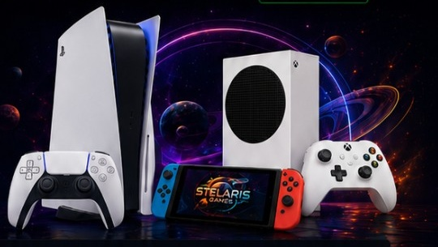
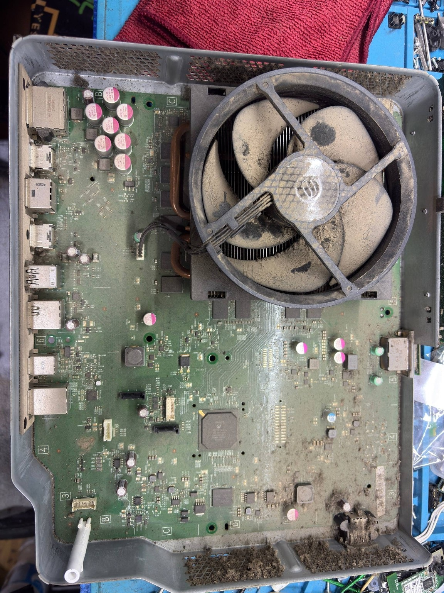
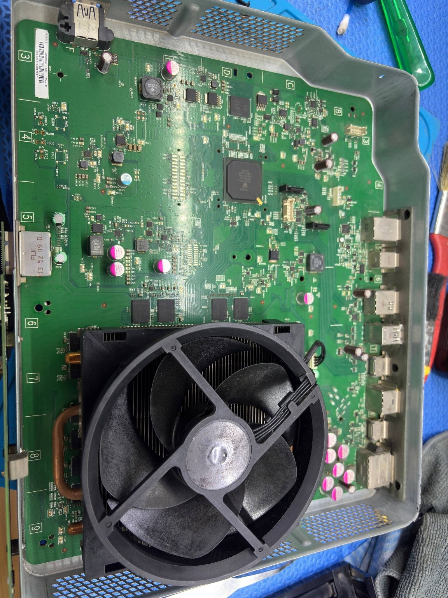
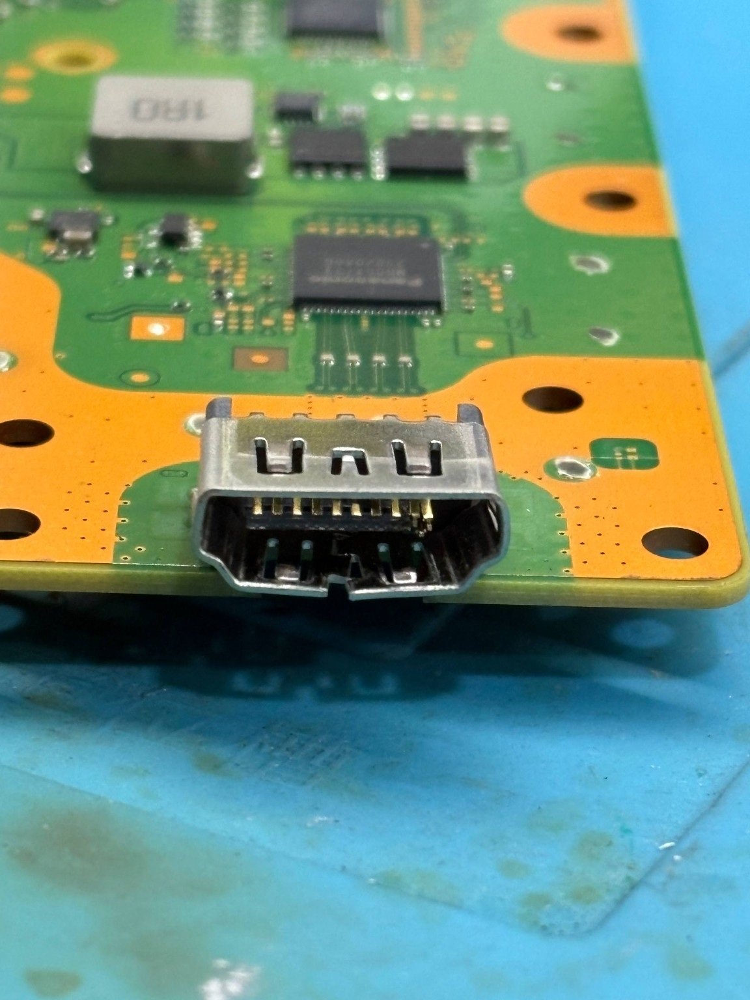
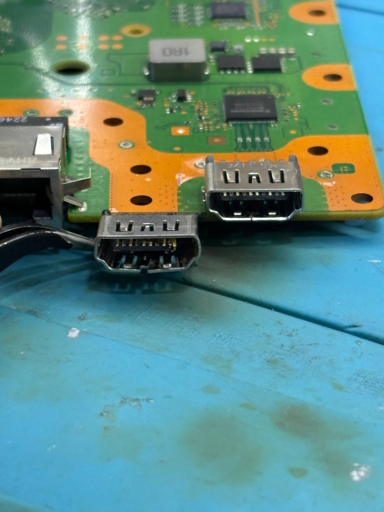
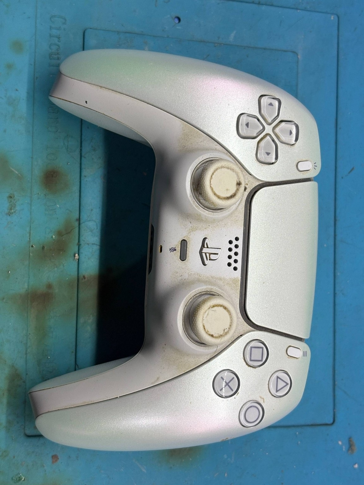
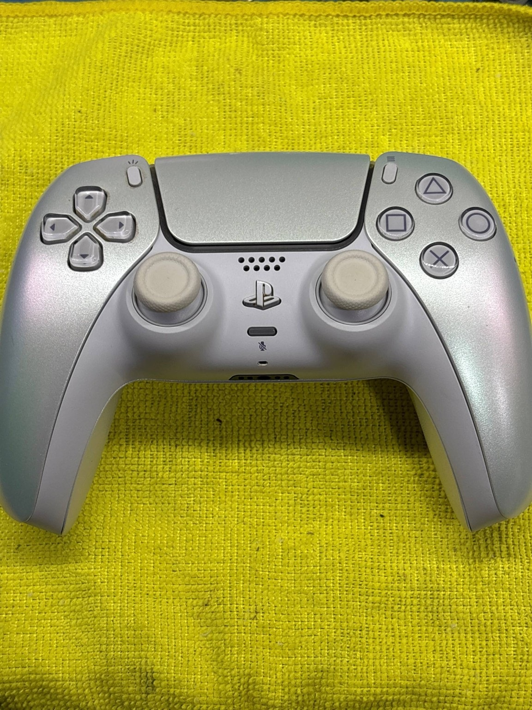

1. ORÇAMENTO
Você descreve o problema e fazemos uma análise para informar o orçamento.
Atuamos com consultoria, diagnóstico e soluções para consoles, controles e notebook. Do Playstation ao Xbox, Nintendo e muito mais.

Transparência e segurança em todas as etapas.
Você descreve o problema e fazemos uma análise para informar o orçamento.
Após a aprovação, iniciamos o reparo com cuidado técnico e peças adequadas.
Realizamos testes para confirmar que o defeito foi solucionado corretamente.
Finalizamos o atendimento com orientação e garantia aplicável.
Soluções para consoles, controles, notebooks e acessórios.
Reparos de PS5, PS4, PS3 E PS2. XBOX SERIES S/X. Nintendo Switch, Controles, Fontes de vídeo Game, Notebooks gamer e convencionais.
Limpeza, remoção de poeira e troca de pasta térmica ou metal líquido.
Drift, analógicos, botões, gatilhos, conectores e outros reparos.
Reparos de conector HDMI, liga e desliga, blackout, reballing e muito mais.
HD, SSD, armazenamento e melhorias compatíveis com o aparelho.
Serviços para modelos compatíveis, com orientação de uso.
Manutenção preventiva, upgrades e reparos selecionados.
Diagnóstico técnico e reparos eletrônicos especializados.
Resultados reais de serviços realizados pela Stelaris Games.

ANTES
DEPOIS
ANTES
DEPOIS
ANTES
DEPOISExperiências reais de clientes da Stelaris Games.
Hoje saí de Campo Grande para ir até Bangu e não me arrependi! Profissionais atenciosos e honestos. Resolveram o meu problema no mesmo dia e já voltei com meu Xbox One pra casa.
Eu só tenho a agradecer!!! Recomendo a todos e agora é meu lugar de confiança se eu precisar de algum serviço nos meus outros videogames.
Melhor loja de games na região, excelente atendimento. Sempre me salvam na manutenção.
Há alguns meses fiz a troca dos meus analógicos do DualShock de PS4 para analógicos com hall effect e me surpreendi com o quanto foram transparentes comigo em todos os processos.
Meu controle nunca havia sido mexido e do nada apresentou um drift nos comandos, impossibilitando o uso. Levei na loja e me surpreendi com o tanto que foram transparentes comigo em todos os processos, seja na comunicação enquanto o controle está no reparo, seja na atenção de entender o meu problema ou seja pelo valor atribuído ao serviço! Estou com meu controle funcionando plenamente hoje graças a um trabalho impecável! Indico por muitos motivos, mas principalmente pelo profissionalismo, comunicação e transparência com o cliente! Super indico!
Conheci a loja depois de levar meu console em outro lugar e me passarem um orçamento absurdo. Quando levei na Stelaris descobri que o problema era muito menor.
O serviço ficou perfeito e gastei muito menos. Agora só confio na loja e recomendo! A técnica é gente boa demais.
A atendente e a técnica são uns amores e quebraram meu galho com serviços de cortesia!!! A loja também é bonita e organizada e os processos são formais e direitinhos!
Muito fodas!
Levei meu controle do PS5 pro conserto, estava com um drift violento e atrapalhava muito a jogativa. O preço foi justo e o serviço finalizado no mesmo dia.
Atendimento excelente e o trabalho executado com perfeição. Hoje consigo chamar meus amigos pra vir jogar sem estresse de controle ruim, tudo está perfeito.
A Stelaris Games é um centro especializado em soluções para o universo gamer, unindo conhecimento técnico, tecnologia e atendimento de alto padrão.
Atuamos com diagnóstico, manutenção e reparo de consoles, controles e notebooks, além da venda de equipamentos e acessórios selecionados.
Nosso compromisso é oferecer excelência, segurança e confiança em cada solução.
Rua Francisco Real, 1950 — Loja 213, 2º piso
Real Shopping, Bangu — Rio de Janeiro - RJ
Atendimento pelo WhatsApp e Instagram.